AWS
Architecture
The following deployment diagram shows an example architecture and the necessary resources for the XMPro platform in AWS.
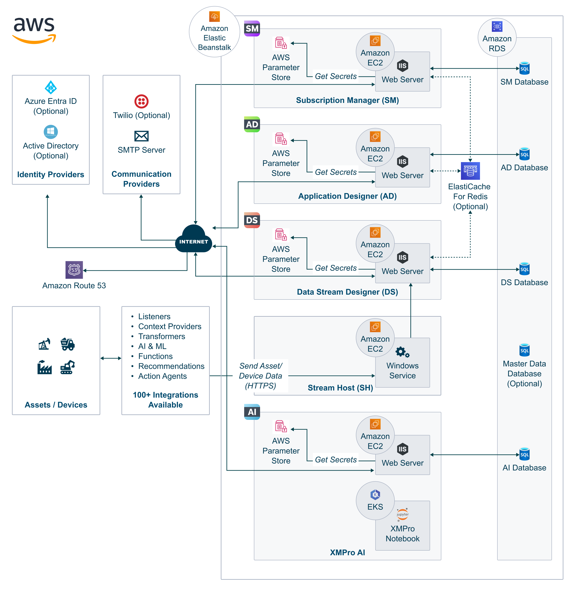
Fig 1: Example XMPro architecture in AWS
The solution is deployed as an auto-scaling Elastic Beanstalk Application with 3 environments:
- SM – Subscription Manager
- AD – Application Designer
- DS – Data Stream Designer & API
These environments use Redis for a centralized Cache and RDS for database storage.
All data transfers are done via HTTPS and the SSL certificates are managed in AWS Certificate Manager.
There are two accounts set up: one for production and one for non-production. Both of these environments follow the above architecture and deployment.
Prerequisites
In order to proceed with the deployment, you are required to complete the steps in the 1. Preparation guide:
- Meet the hardware requirements
- Install the software requirements
- Follow the certificate and communication steps
Note
Two SSL Certificates are required
An SSL Certificate in AWS Certificate Manager, used by IIS (See the Appendix guide).
An SSL Certificate, used by the SM instance (added to the S3 Bucket during the installation). Create or ask your administrator for an SSL certificate with the correct DNS name. A self-signed certificate is good enough. There are many ways to generate this certificate, one of which is described in the above 1. Preparation guide. Please note the file names must be called ssl.pfx and ssl.password.txt.
Resources
We are going to be deploying the following resources, please ensure you have the desired domain names ready.
- SQL RDS
- Parameter Store
- Elastic Beanstalk Application
- Elastic Beanstalk Environment – Subscription Manager
- Elastic Beanstalk Environment – App Designer
- Elastic Beanstalk Environment – Data Stream Designer & API
An example of preferred domain names is as follows; each set is for a specific account as per the architecture diagram.
For production:
- https://sm-xmpro․domain․com
- https://ad-xmpro․domain․com
- https://ds-xmpro․domain․com
For non-production:
- https://sm-nonprod-xmpro․domain․com
- https://ad-nonprod-xmpro․domain․com
- https://ds-nonprod-xmpro․domain․com
Log on to the AWS Management Console and switch to the region you want to deploy the solution in, you will need Administrative rights to the subscription to complete the deployment.
ElastiCache
Search for ElastiCache in the Services dropdown and select it.
- Click the Get Started Now button from the screen that opens.
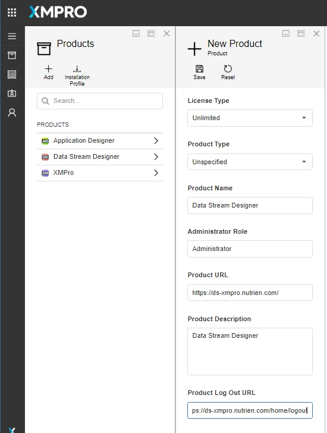

- Make sure Redis is selected, click create.

- Provide a name for the cache, select the size and leave the rest of the Redis options as defaults.

- Provide the Subnet information and select the VPC to deploy Redis in.
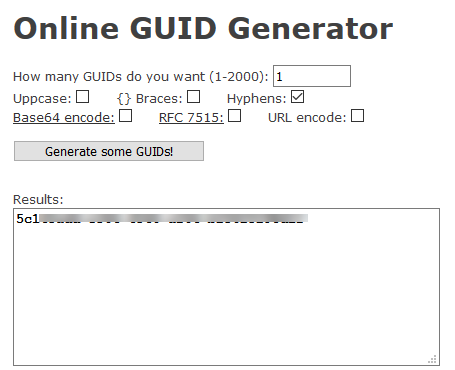
- Click Create to complete the Redis configuration and create the cache.

Once created, select EC2 from Services, and under Network & Security click Security Groups.
Edit the default security group and add Redis Port 6379 to the Inbound rules.

- Make a note of the Redis endpoint as it will be used later within the Redis Connection string.
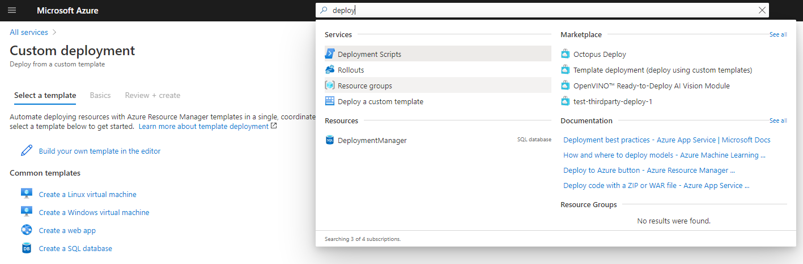
Note
- Currently, SignalR doesn't support Redis Clusters https://docs.microsoft.com/en-us/aspnet/signalr/overview/performance/scaleout-with-redis
- Sticky Sessions must be used for SignalR https://learn.microsoft.com/en-us/aspnet/core/signalr/scale?view=aspnetcore-6.0
Amazon RDS Creation
In the AWS Management Console choose RDS under Database in the Services drop-down.
- Click Databases and then click Create database.

- Select Easy Create, SQL Server, and the desired Tier for the database instance.

- Provide the DB instance Identifier, Username, and Password for the RDS database instance. Click create.

- Once created it will appear as below:

- Click the DB Identifier just created.
Note
Make a note of the following:
- Endpoint - In this example: aero-sql.cug4m2yk6h94.ap-south-1.rds.amazonaws.com
- User - as specified earlier
- Password - as specified earlier

- The security group will need to be modified to allow inbound traffic this is done as follows:
6.1. Click the VPC security groups.

6.2. Select the Default security group, click Inbound then click Edit.

6.3. Add a new rule called MS SQL, with Protocol as TCP and Port Range as 1433; and click Save.
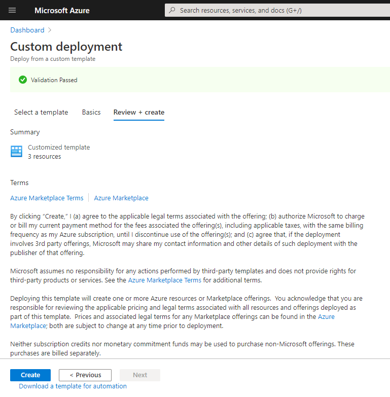
Parameter Store Identity and Access
- Click IAM under Security, Identity & Compliance

- In IAM click policies click Create policy

- Select Import managed policy

- Search and select AmazonSSMManagedInstanceCore then click Import
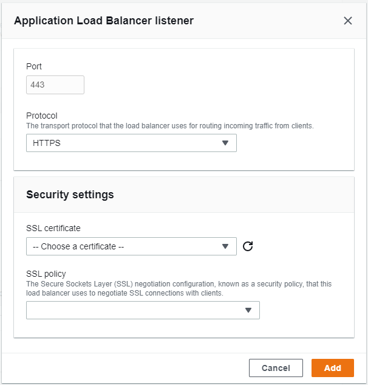
- Click Add additional permission

- Choose service Systems Manager

- Select Read and click Review Policy
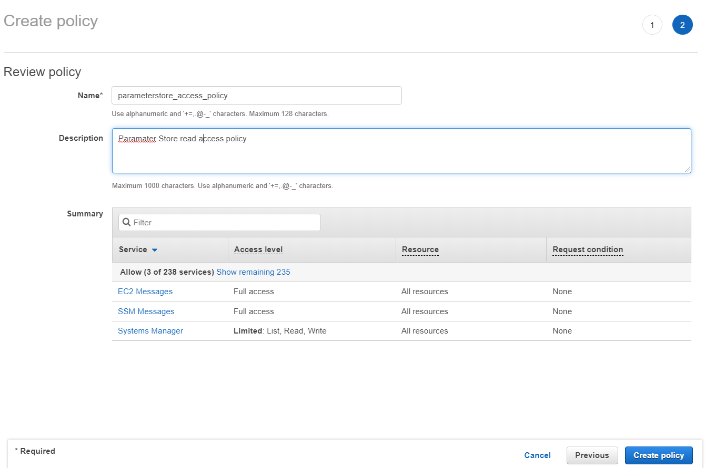
- Expand resources and resolve all the warnings by clicking All Resources.

- Enter a Name and Description for the policy and click Create Policy

- Search for the Newly created policy, select it, and click Policy Actions

- Select Attach from Policy actions

- Attach this new policy to the role aws-elasticbeanstalk-service-role and click Attach Policy
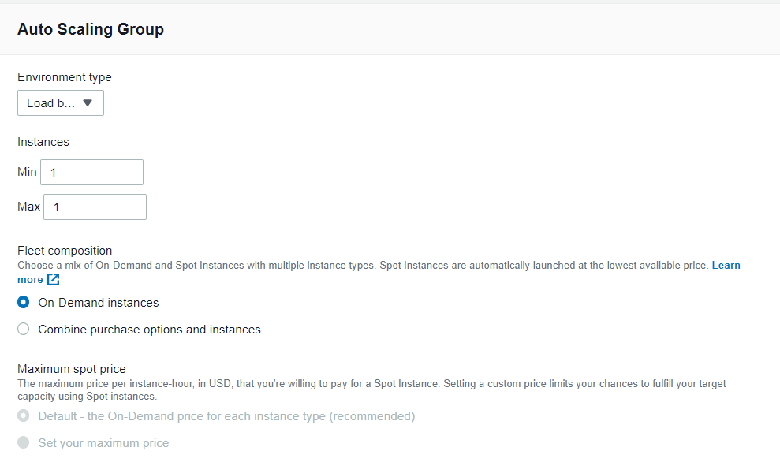
Create Elastic Beanstalk Application
The first step in using AWS Elastic Beanstalk is to create an application, which represents your web application in AWS. In Elastic Beanstalk an application serves as a container for the environments that run your web app and for versions of your web app's source code, saved configurations, logs, and other artifacts that you create while using Elastic Beanstalk.
- Open the Elastic Beanstalk console, and then, in the regions drop-down list, select your region.

- In the navigation pane, choose Applications, and then click Create Application.

- Use the on-screen form to provide an application name.

- Click Create.

Note
You have successfully created the application. Next, we'll create the application's environments for each product: Subscription Manager, Data Stream Designer, and App Designer.
Subscription Manager
Create Environment
- Select the Application, click on Actions then click Create environment

- Click Select

- Provide the Environment name for Subscription Manager.

Select the Platform information.
Select Sample Application and click Configure more options

- Click Edit under the Capacity section.

- Select Load Balanced under Environment Type and set the required Instance Min and Max to 1. (More information can be found here)

- Change the Instance type to the required instance type.

- Click Save.

- Click Edit under the Network section.

Under the VPC section select the VPC this environment should run in, set the visibility according to your requirements and select the load balancer availability zones.
Scroll down and click Save.

- Click Edit under the Load balancer section.
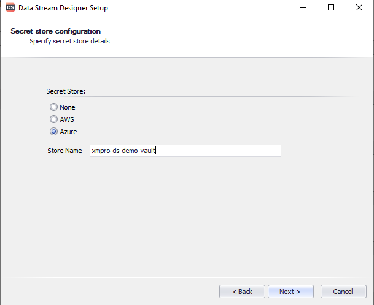
Select Application Load Balancer and scroll down.
Click Add listener.
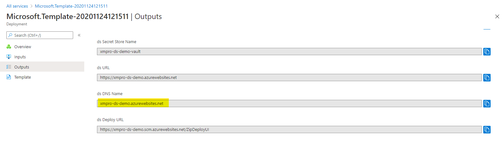
Enter 443 in Port
Select Protocol HTTPS.
Select the SSL certificate you added in the Certificate Manager earlier on and click Add.
Scroll down.

- Select the default Process and under Actions click Edit.

- Change the Port to 443 and the Protocol to HTTPS, then scroll down.

- Tick the Stickiness policy enabled option and click Save.
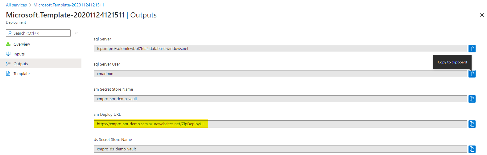
- Click Save.

- Click Create environment to have the defined environment created.

Create S3 Bucket
- In the AWS Management Console, choose S3 under Storage in the Services drop-down.

- In S3 click Create Bucket to create a new bucket.
- Enter a name for the bucket name and click Create bucket.
- Select the Region for your bucket
- Remove the checkmark for Block Public Access

- Acknowledge the warning for a public bucket

- Click Create Bucket
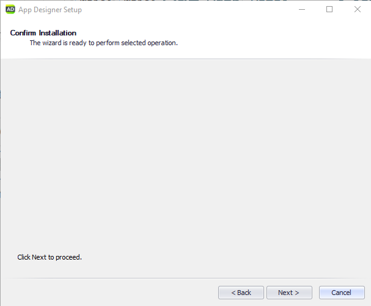

- Copy the sign.pfx and sign.password.txt files (the signing certificate referenced in the 1. Preparation guide) into the bucket and ensure the files are publicly accessible.
- Copy the ssl.pfx and ssl.password.txt files (the SSL certificate referenced in the 1. Preparation guide) into the bucket and ensure the files are publicly accessible.
Note
The signing certificate is between the end user and the load balancer. The instance SSL certificate is used between the instances and the load balancer.
Install Subscription Manager
- Run the installation wizard for Subscription Manager

- Run Subscription manager as Administrator

- Follow the instruction in the installation wizard: click Next.

- Select the Install option (1) and click Next (2).

- Tick Database (1), Web Application (2), select AWS Package (3), and click Next (4).

- Enter the secret store prefix (1), the S3 Bucket name from earlier (2), and click Next (3).

- Select the installation path (1), the DNS name for the site (2), and click Next (3).

- Enter the SMTP details referenced in the 1. Preparation guide and click Test SMTP settings (1), If successful, click Next (2).

- Enter the Signing Certificate details:
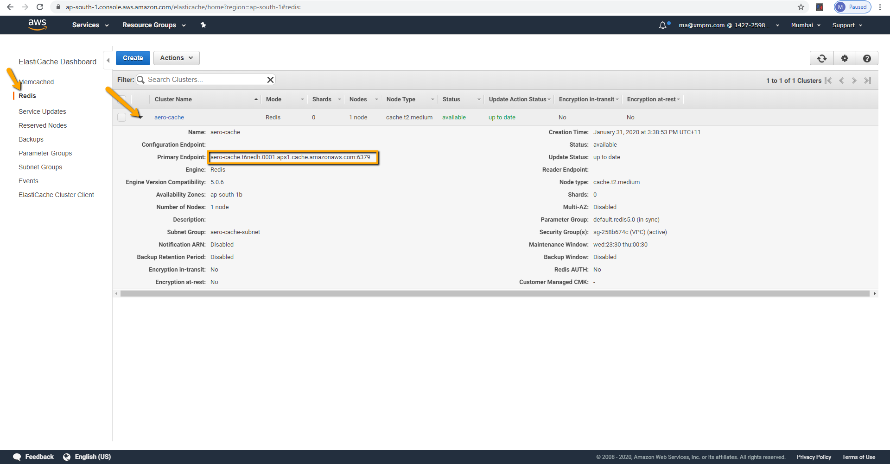
9.1. Browse to the certificate created earlier 9.2. Enter the certificate password 9.3. Select the subject name 9.4. Select Local Machine 9.5. Click Next
- Click Next once the installation has completed.

- Make a note of the Username and password, and click Finish.

AWS Systems Manager – Parameter Store
- Navigate to Parameter Store in AWS Systems Manager.


- Click Create parameter.
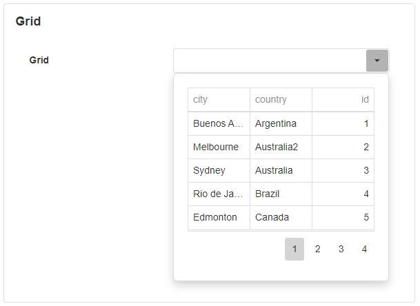
- Create a SecureString parameter.


- Browse to the folder where SM was installed
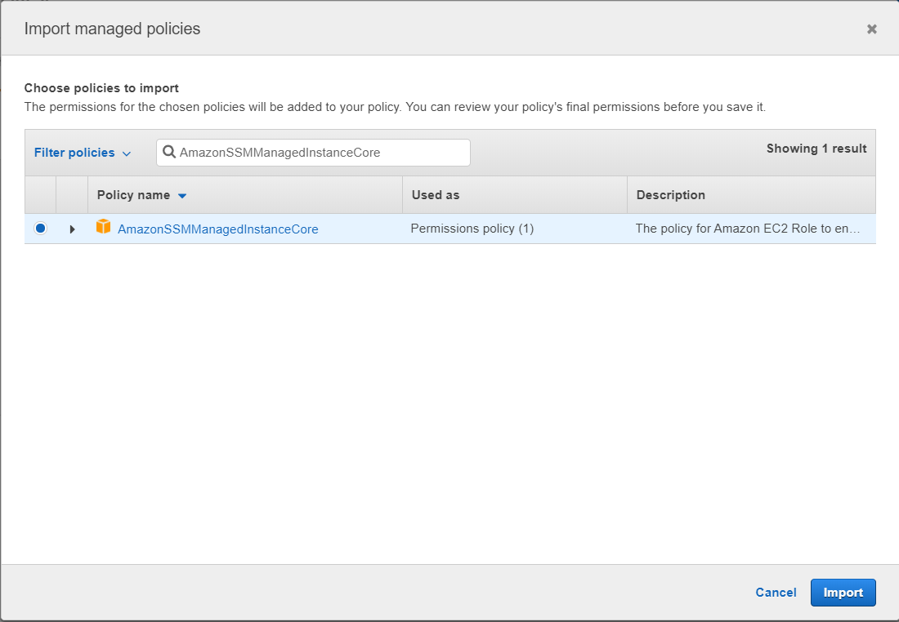
- Edit the file called App Secrets.xml: create the parameters as per the line items in the file:

- Locate the S3 folder in the deployment folder. Copy the contents to the S3 Bucket you created.
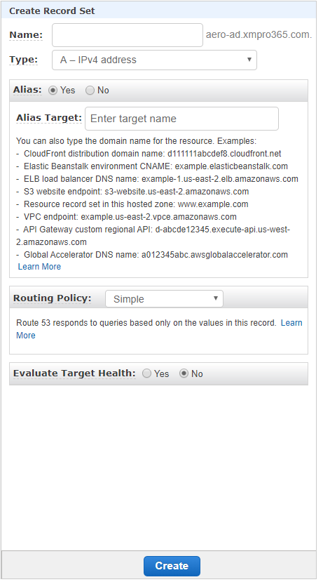
Deploy the Subscription Manager
- Click Environments in Elastic Beanstalk service
- Click the SM Environment you created earlier
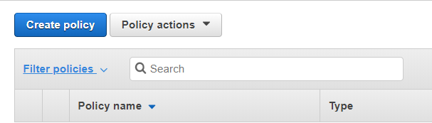
- Use the on-screen form to upload the zip file.

- Select the zip file to deploy from the folder where SM was installed. Click Deploy.

- Navigate to the URL and log in using the following credentials:
- admin@xmpro․onxmpro․com
- Pass@word1
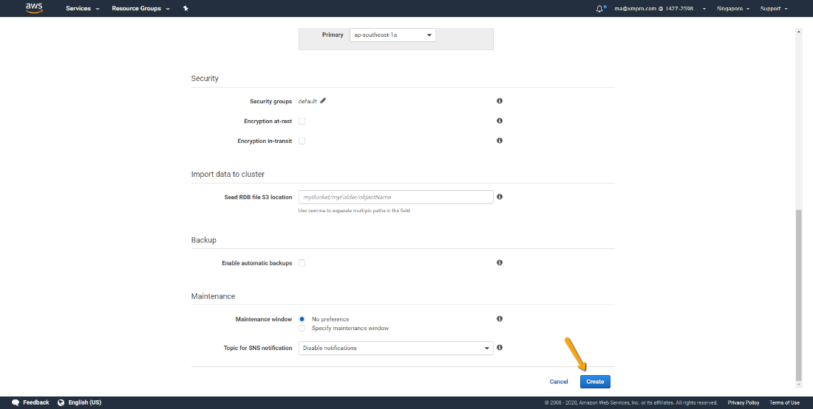
Reset the administrator password and store it securely in a password vault.
Click SM

- Click Products

- Click Installation Profile

Data Stream Designer
Create Environment
- In the AWS Management Console choose Elastic Beanstalk under Compute in the Services drop-down.
- In the navigation pane, choose Environments
- On the application overview page, choose Create a new environment.
- Follow the same instructions on environment creation as done for the Subscription Manager.

- Run the Data Stream Designer installer as Administrator. Click Next.

- Select Install (1) and click Next (2).
- Select the items as shown below and click Next.

- Provide a Prefix and the S3 Bucket name

- Provide the Database Details:
- Provide the SQL endpoint
- Change the SQL user
- Select a new DB and provide a name for the DB

- Provide the DNS name for the Environment

- Browse to the downloaded installation profile and select it

- Login using the credentials for SM

- Click Next
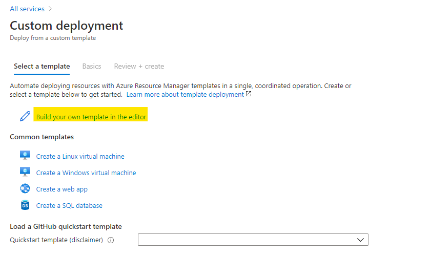
- Once the installation completes, click Next

- Click Finish

Install & Deploy Data Stream Designer
- Browse to the installation folder, as outlined in Subscription Manager.
- Edit the App Secrets.xml file and create the Parameters in System Manager.
- Upload and deploy the package.zip file to the newly created environment using upload and deploy as per SM deployment.
App Designer
Create Environment
- In the AWS Management Console, choose Elastic Beanstalk under Compute in the Services drop-down.
- In the navigation pane, choose Environments
- On the application overview page, choose Create a new environment.
- Follow the same instructions on environment creation as done for the Subscription Manager.
- After installing Application Designer, run the setup as Administrator and click Next.

- Select Install and click Next.

- Select the items as below and click Next.

- Provide the SQL endpoint and click Next.

- Provide the DNS name for the environment and click Next.

- Provide the URL for the Data Stream Designer installed earlier, and click Next.

- Enter the SMTP details referenced in the 1. Preparation guide and click Next.

- Enter the Twilio details referenced in the 1. Preparation guide and click Next. If you don't want SMS notifications you can select "None" from the "Select Provider" dropdown.

- Browse to the downloaded installation profile and select it. Click Next.

- Login with SM credentials to authenticate.
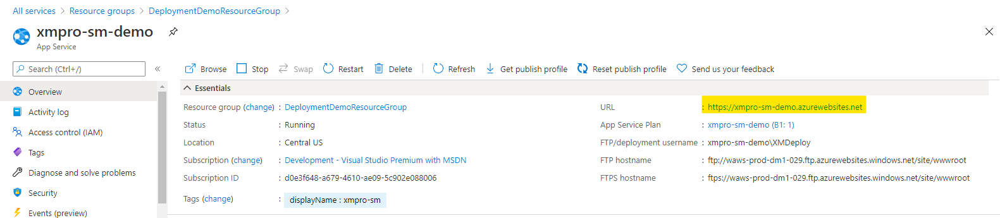
- Click Next.

- Click Next after the installation is complete.

- Click Finish.

Install & Deploy App Designer
- Browse to the installation folder, as outlined in Subscription Manager
- Edit the App Secrets.xml file and create the Parameters in System Manager.
- Upload and deploy the package.zip file to the newly created environment using upload and deploy as per SM deployment.
Appendix
SSL certificate in Certificate Manager
In the AWS console go to the Certificate Manager
- Select the region the SSL Certificate is required in
- The certificate can be either imported or a new certificate can be requested.
To request a new certificate

- Click Get started under Provision Certificate

- Click Request a certificate
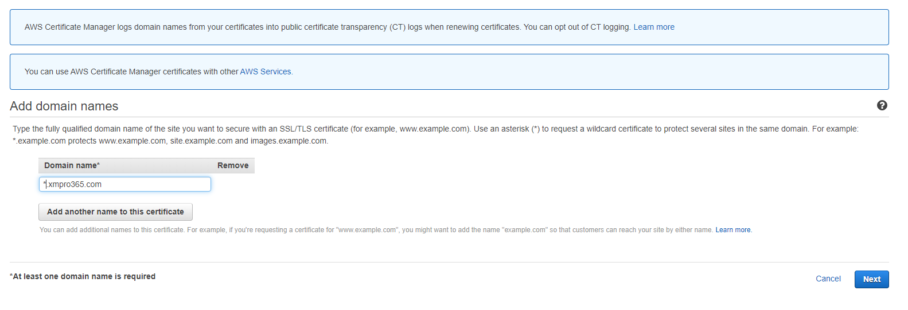
- Enter the certificate domain name and click Next
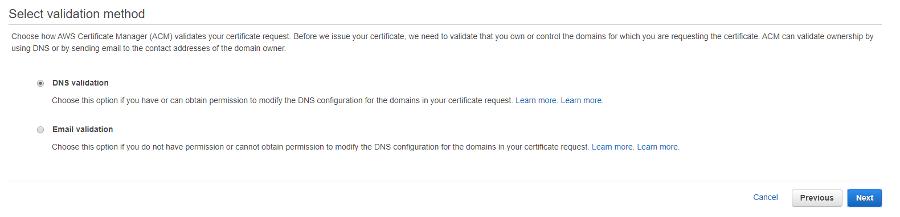
- Select the DNS validation method and click Next

- Review your settings and click Confirm and request if correct

- Once the DNS configuration file becomes available, click Continue

- Contact your IT administrator to complete the DNS verification by adding the CNAME record to your website DNS
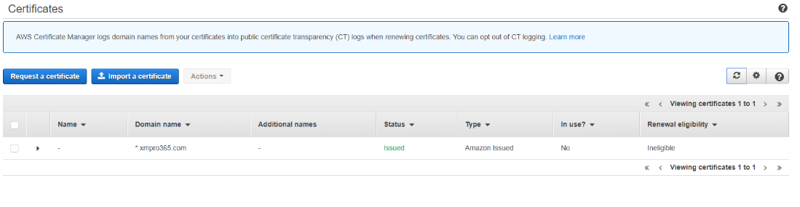
- Once the DNS verification is complete the SSL certificate is added to your certificate manager for the specified region
To import a certificate

- Click Get started under Provision Certificate

- Click Import a certificate
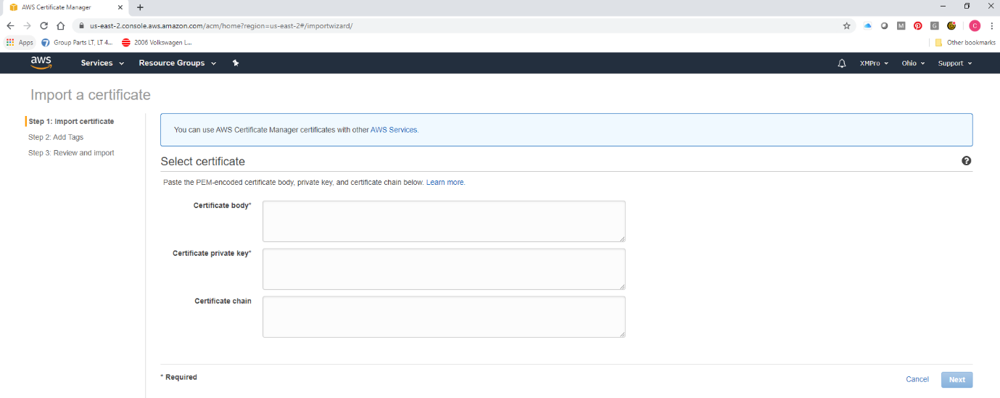
- Complete the certificate detail and click Next to import the certificate
Create the EB Application URLs
- Search for ElastiCache in the Services dropdown and select it.

- In the left-hand panel, click Hosted Zones.

- Click Create Hosted Zone.

- In the right-hand panel complete the Domain Name using the domain name you created the SSL certificate for and click Create.

- Click Create Record Set.

- Change Alias to Yes, then go to EC2 in AWS services and scroll down to Load Balancing and click Load Balancers.
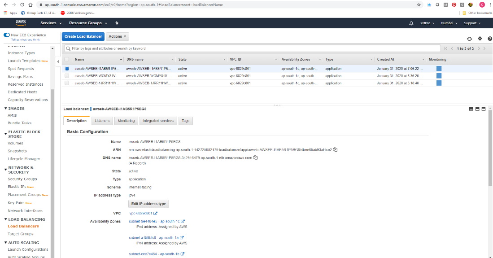
- Select a Load Balancer and click Tags to identify what Application is serviced by the selected Load Balancer.
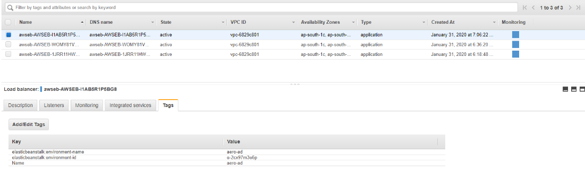
- When the correct Load Balancer for the Application is identified, click the Description Tab.

- Copy the DNS Name for the Load Balancer. Go back to the Record Set you created in Route 53.

- Paste the Load Balancer DNS address in the Alias Target field and click Create.
This needs to be completed for each ELB Application.

- The NS values must be provided to you by the DNS Administrator to create the NS records in the Domain DNS records. This needs to be completed for each ELB Application.
Configure the security groups
- In the AWS Management Console, choose EC2 under Compute in the Services drop-down.
- Click Security Groups under the NETWORK & SECURITY option.

- Click Create security group.

- Create the RDS_security_group and select the VPC.

Add the following rules and replace the source with the security groups assigned to the environments you created earlier.
Create an additional security group called REDIS_Cache_security_group.

- Add these rules again using the security groups for the environments created earlier as the source.

- In Elastic Beanstalk, select the environment you want to change.

- Click Configuration in the left pane

- Remove the default security group and click Apply. Do this for all the environments.

- In Services, selects RDS and click Databases.

- Select your RDS database and click Modify.

- Scroll down to Network and Security. Select the RDS security group you created earlier and remove the default security group.

- Scroll down and click Continue.

- Select Apply Immediately and click Modify DB Instance.

- Select ElastCache from Services and click Redis.
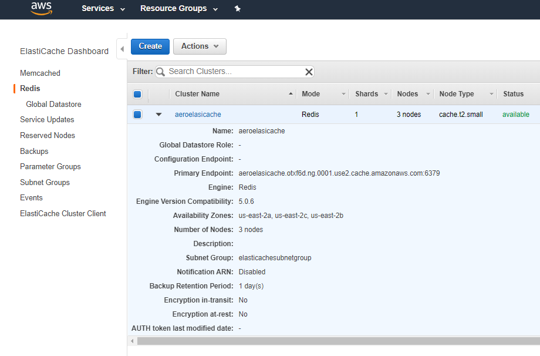
- Select the Redis Cache you created earlier and from Actions click Modify.
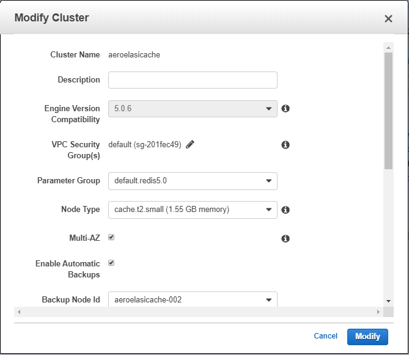
- Edit the Security Groups

- Remove the default security groups and add the Redis Cache security group created earlier. Click save and modify.
Next Step: Complete Installation
The installation of the XMPro Platform is now complete, but there are some environment setup steps before you can use the platform. Please click the below link for further instructions: